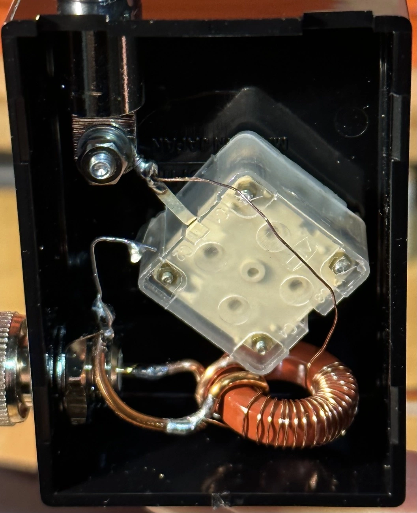

しながわハンコ倶楽部 で生み出された GAWANTアンテナ を参考に自作してみました。
オリジナルの作り方を見つけることはできませんでしたが、様々な人が自作している情報をもとに作ることにしました。
基本回路はLCの共振回路であるようです。
7MHzにも合わせられるようにしたいと思っていたところ https://www.youtube.com/watch?v=w-i3wyOGz8Q を発見。真似させていただきました。
材料
- トロイダルコア T-68-2
- 単連ポリバリコン 260pF
- ポリウレタン銅線 0.32mm （ちょっと細かったかも）
- プラケース SW-65 W45xH25xD65
- BNC-P端子
- アンテナ
- 銅線（1.6mm IV線を使ったのでちょっと太かったかも）

設計
- 一次側を2回
- 二次側を20回

FT-818ND へ接続するため、横にBNC端子を取り付けました。 ラジオアンテナとしても良さそうなので、短波用にまずは運用してみます。
検証
疑問
- アンテナ長と共振周波数との関係の理解できていない
- アンテナの長さを変えるとLC共振周波数にどう影響を与えているのかわからない。